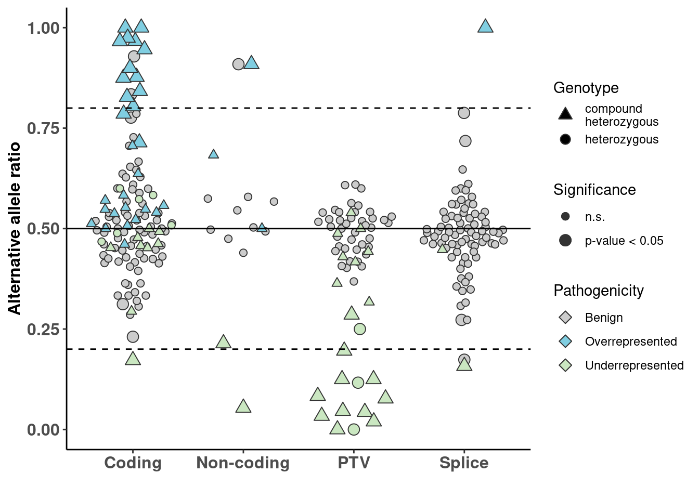
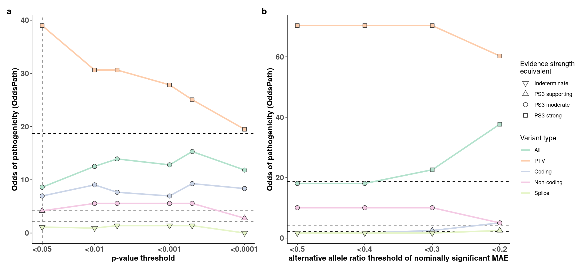

Allele-specific expression analysis was performed with negative-binomial test implemented in the DROP pipeline.
Odds of pathogenicity (OddsPath), described by Tavtigian et al., 2018 and established for functional assays by Brnich et al., 2019 was calculated as:
OddsPath = (P2(1-P1))/((1-P2)P1),
where P1 is prior probability, or proportion of Pathogenic variants in overall data P1 = N_pathogenic/(N_pathogenic + N_benign)
and P2 is posterior probability proportion of pathogenic variants in the groups with functionally abnormal or functionally normal readouts P2 = N_pathogenic_aberrant/(N_aberrant+1)
OddsPath was calculated for different variant types (Coding, Non-coding, PTV and Splice) and for different thresholds : significance or effect size & significance
Mono-allelic expression, extreme case of allele-specific expression, could be defined by significance & effect size (allele ratio or fold change)
For variants causing MAE, extreme imbalance can serve as evidence of pathogenicity. For mono-allelicly expressed variants no functional evidence could be provided, however, for recessive disorders, allelic evidence of pathogenicity (PM3) could be applied.
Based on OddsPath calculations, we investigated how different thresholds affect maximum pathogenicity evidence strength, that could be assigned in the ACMG/AMP framework to a variant causing RNA phenotype
p0
based on variants causing MAE ##### panel a p-value thresholds ##### panel b alternative allele ratio thresholds of nominally significant (p-value < 0.05) MAE
sup_mae